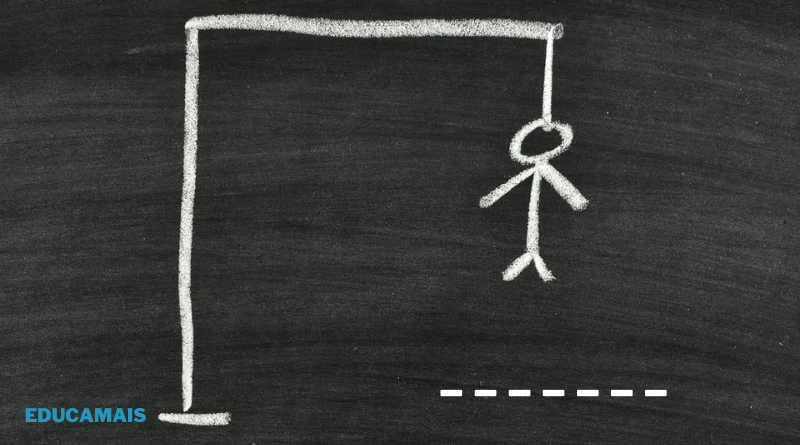

Jogo-da-Forca
Um jogo da forca simples, jogado pelo terminal. O programa sorteia uma palavra relacionada a programação e o jogador tenta descobri-la chutando uma letra por vez.
Acessar projetoSistema Matemático
Um projeto simples, modular e eficiente desenvolvido em Node.js para execução de operações aritméticas fundamentais e resolução de equações do 2º grau através da Fórmula de Bhaskara.
Acessar projetoSistema de Gestão de Biblioteca
Sistema em Node.js via linha de comando (CLI) para gerenciamento de cadastro de leitores, livros físicos e e-books, além de cálculo automático de multas por atraso de devolução.
Acessar projetoSistema de Cadastro e Busca
O sistema roda no terminal e permite matricular alunos, contratar professores e buscar cadastros pelo CPF. Os dados ficam armazenados em memória durante a execução.
Acessar projeto
Sistema de Gestão MVC
Este projeto consiste no núcleo Back-End de um sistema corporativo operado via linha de comandos. O seu objetivo principal é garantir o controlo centralizado e rigoroso de Equipamentos de TI e Técnicos de Suporte, aplicando regras de negócio e validações em tempo de execução através do padrão MVC (Model-View-Controller).
Acessar projeto